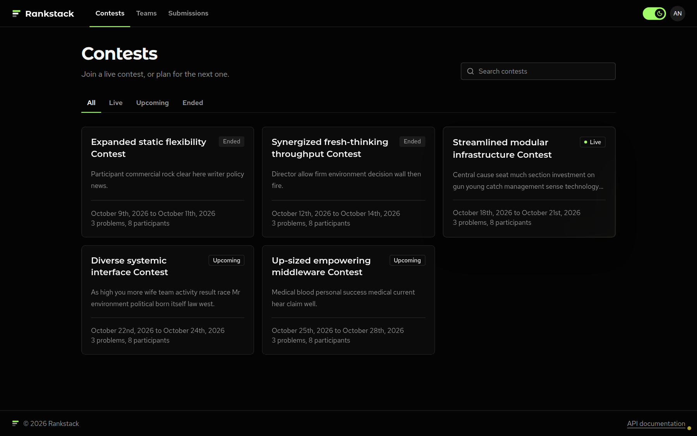
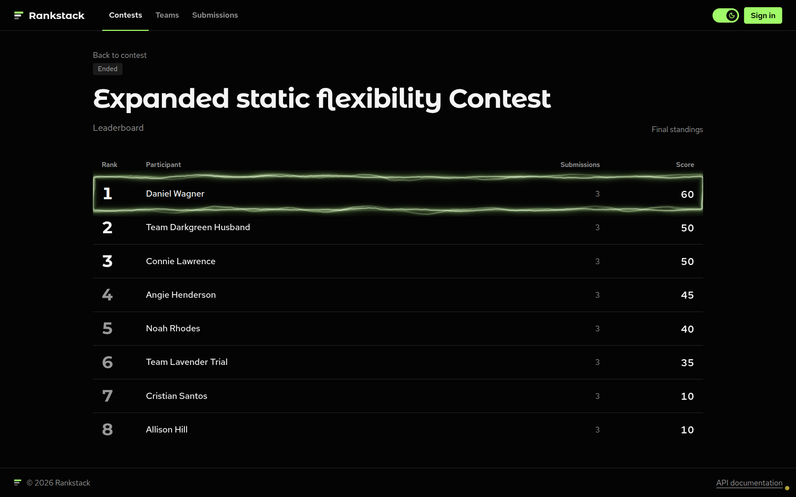

Contest participation, evaluated submissions, and ranked results.
Upayan Mazumder · Aditya Rawat · Shloak Sinha
MongoDB collections
Fresh local sample documents
Aggregation pipelines
MongoDB
Users · teams · contests · problems · submissions
Verified demo
CRUD, two indexed queries, transactions, five aggregations, and Redis operations

Seeded local contest catalog

Seeded local final standings
IXSCAN for problems and participant submissions.1. Open the website and sign in to the local seeded demo.
2. Browse contests, problems, teams, and the leaderboard.
3. Update a submission verdict as an administrator.
4. Run make demo against the seed database.
5. Explain transactions, indexes, and Redis expiration.
The public contest catalog was empty at screenshot time. The local seed supplies 112 documents for the review.